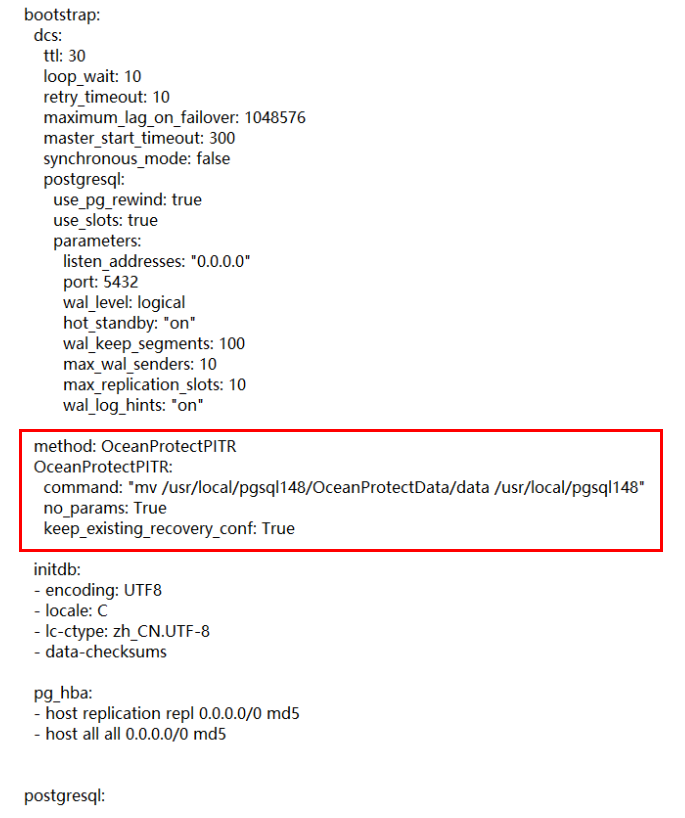

Symptom
When PostgreSQL databases of the Patroni cluster deployment type are restored to a specified point in time using log copies, the restoration job is successfully executed, but the restored data in the specified databases is inconsistent with the data at the specified point in time for restoration.
Possible Causes
Before restoring PostgreSQL databases of the Patroni cluster deployment type to a point in time using log copies, you need to configure the patroni.yml configuration file of the Patroni cluster in the target location for restoration in advance by referring to Prerequisites. If the file is not configured or the configuration location is incorrect (for example, the configuration is not performed under bootstrap of the patroni.yml configuration file), data inconsistency occurs.
Troubleshooting
- Use PuTTY to log in to the host where the PostgreSQL database is of the Patroni cluster deployment type.

The Patroni cluster consists of multiple nodes, and active/standby switchover can be performed for it. Therefore, you need to perform the following steps on all Patroni cluster nodes to ensure that no new problem occurs during restoration.
- Configure the Patroni cluster configuration file patroni.yml in the target location for restoration by referring to Prerequisites. The recommended configuration location is above initdb under bootstrap in the patroni.yml file, as shown in the red box of the following figure. Ensure that the indentation for method and initdb is the same. Do not add configurations under other items. Otherwise, the restoration job fails or data inconsistency occurs after the restoration job is successfully executed.
A configuration example is as follows:

- After all nodes in the Patroni cluster are configured, perform point-in-time restoration using log copies again. The restoration job is successfully executed and data is successfully restored to the data at the specified point in time.